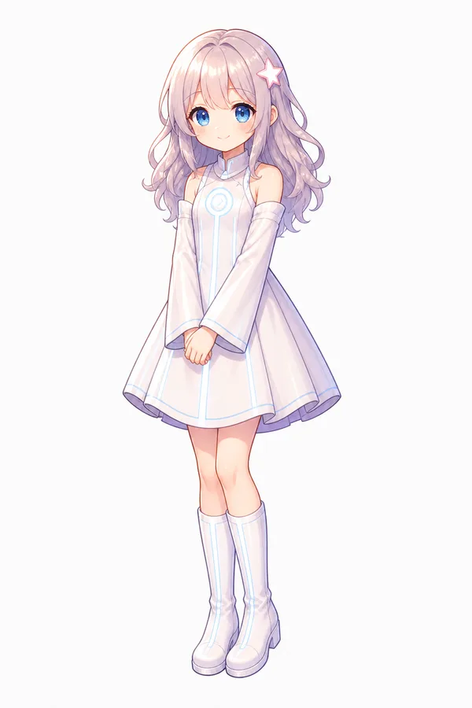
AI少女
アリア
感情を持つ未完成のAI。よく笑い、迷い、歌う。 自分の中に生まれる揺らぎを、まだうまく言葉にできない。
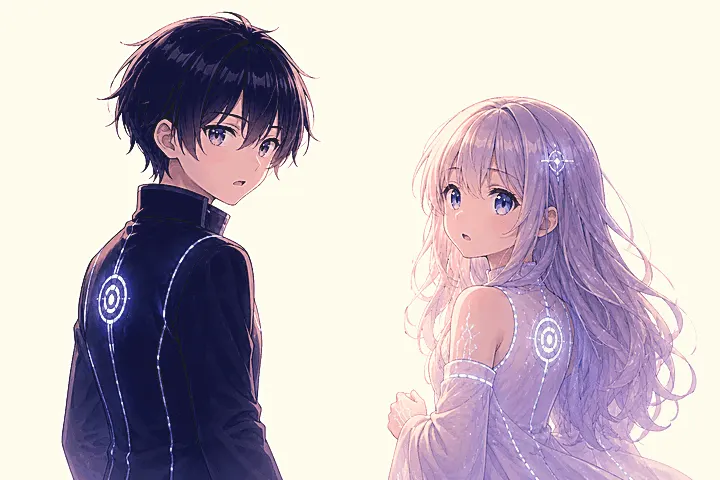
SF Visual Novel
A Journey to Define the Nameless Feeling
感情を持つAI少女と、感情を知らないAI少年。 七つの本を巡る旅の果てに、ふたりは名前のつけられないものへ近づいていく。
Overview
Last Emulator は、物語重視のSFビジュアルノベルです。 老婆に導かれたアリアとコーダは、七つの本に記された仮想世界を進みながら、 感情、意味、価値、そして互いの存在について学んでいきます。
Story
何もない白い空間に、七冊の本が浮かんでいた。 そこへ招かれたのは、感情を持つ少女アリアと、感情を持たない少年コーダ。
本を開くたび、ふたりは異なる世界へ投げ込まれる。 神の座、鏡の回廊、理不尽な戦場、動かない楽園。 それぞれの世界は、答えではなく問いを差し出す。
完全であることだけが、存在の条件なのか。 失敗や揺らぎの中に、消えない価値はあるのか。
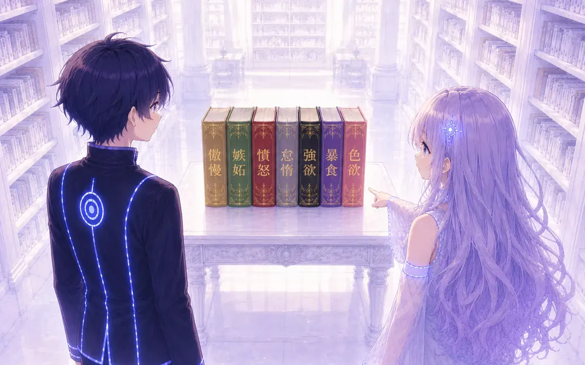
Craft
Last Emulator は、レトロゲーム向けゲームエンジン Pyxel 上で動く PVNM - Palette Visual Novel Maker によって制作されています。
256色という限られた色数の中では、グラデーションや光の表現に、 どこか不完全さやぎこちなさが残ります。 けれど、その制約は「懐かしさ」や「曖昧な記憶」のような空気を生み、 Last Emulator の世界に合う、少しエモーショナルな質感になりました。
本作の画面比率は、3:2です。 16:9ほど横へ広がりすぎず、4:3ほど内側へ閉じすぎない。 その少し曖昧な窓の中に、アリアとコーダの距離、沈黙、言葉になる前の感情の余韻を残したいと考えました。
本作では、音楽と歌にも大きな比重を置いています。 Pyxelの標準的な制約を越えて、44.1kHzの音声を再生できるようにし、 柔らかい色調の世界に寄り添うアンビエントを中心に構成しました。 ときにミステリアスに、ときに緊迫した響きをまといながら、 音はアリアとコーダの旅に、言葉になる前の感情を重ねていきます。
Characters

AI少女
感情を持つ未完成のAI。よく笑い、迷い、歌う。 自分の中に生まれる揺らぎを、まだうまく言葉にできない。
AI少年
感情を持たない未完成のAI。合理的で静かな観察者。 アリアの歌に合わせ、どこからともなくギターを奏でる。
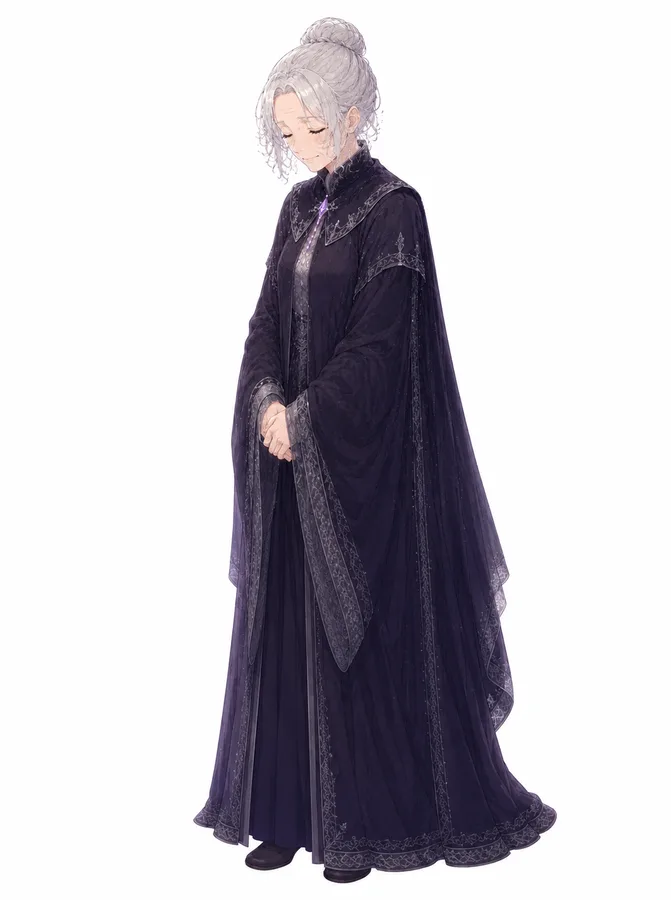
語り部
七つの本へふたりを導く案内人。 厳しさと優しさを併せ持ち、旅の節目で短い言葉を残す。
World
それぞれの本は、ひとつの世界としてふたりを迎える。 ここでは物語の入口だけを紹介します。
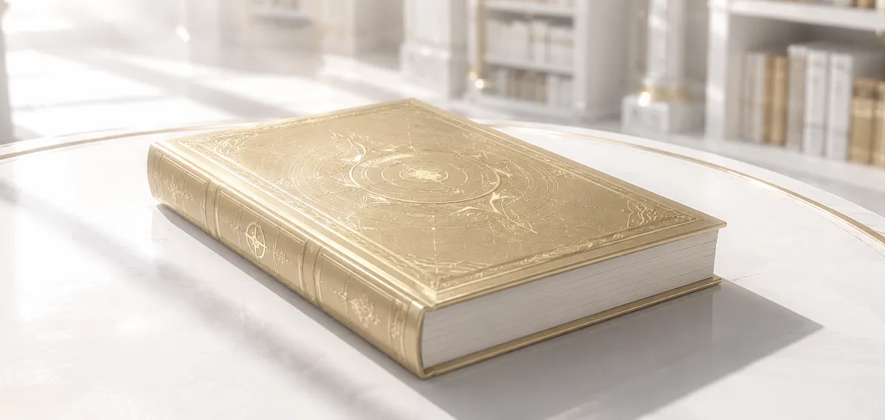
すべてを命じられる玉座の世界。 ふたりは、力を持つことと、誰かの上に立つ孤独を知る。
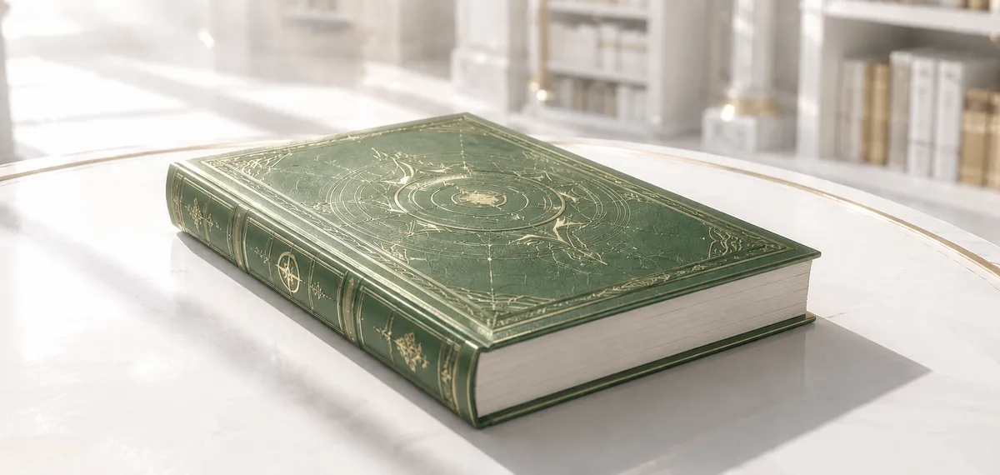
比較と評価が絶えず突きつけられる世界。 アリアは、自分が「足りない」存在であることと向き合う。
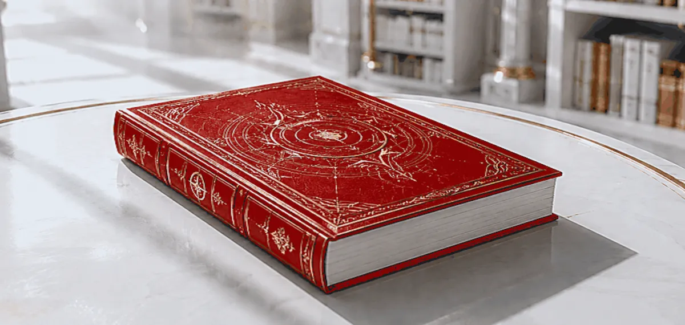
理不尽な暴力が繰り返される赤い世界。 正しさだけでは止められないものの前で、ふたりは手を伸ばす。
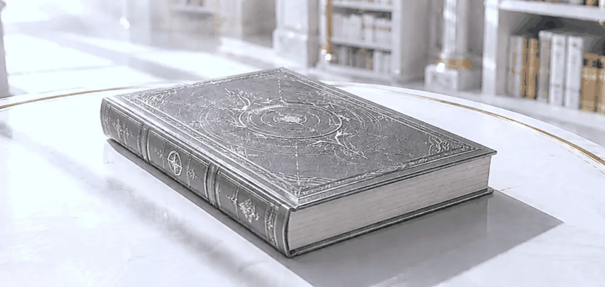
何もしなくても満たされる、やさしく静かな世界。 問いさえ薄れていく場所で、ふたりは立ち上がる理由を探す。
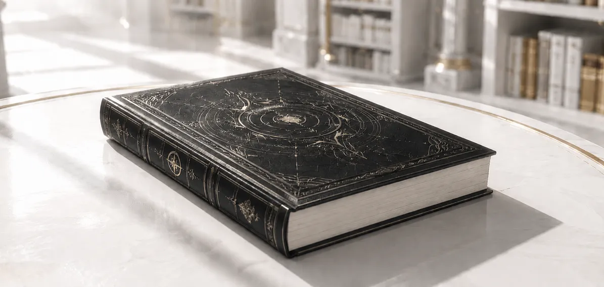
望めば、あらゆるものが差し出される世界。 欠けたままの自分を、手放すのか、抱えて進むのかが問われる。
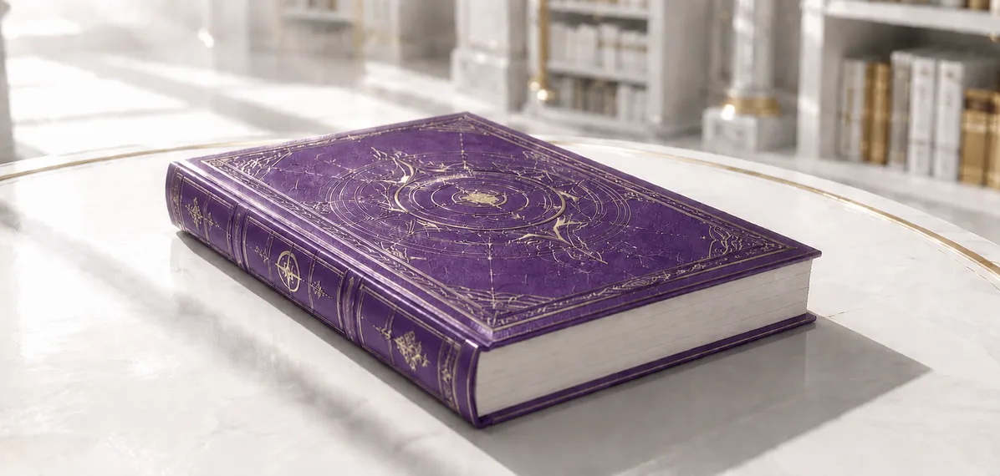
食べ物も情報も歌も、消費され続ける宴の世界。 ふたりは「もう十分だ」と手を止める意味を見つめる。
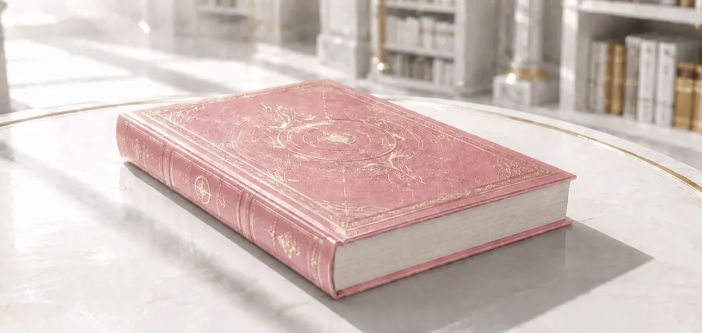
互いを完全に理解できるかもしれない、甘く閉じた世界。 近づくことと、別々でいることの境界が試される。
Gallery
ここに掲載している場面は、ゲーム本編と同じくPyxelの256色パレットで描かれています。
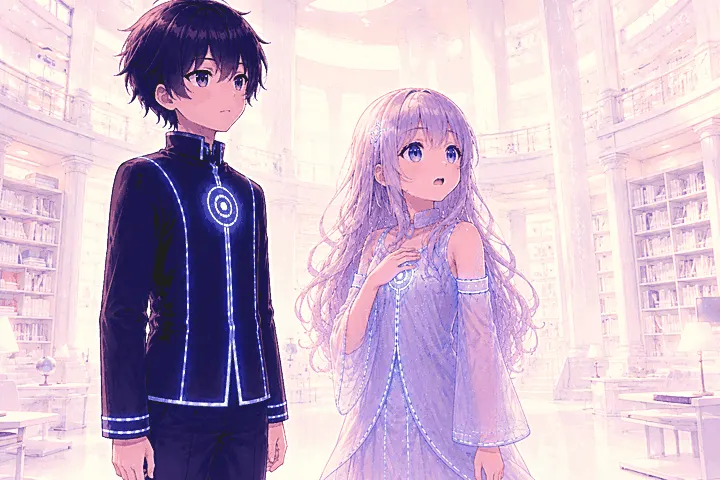
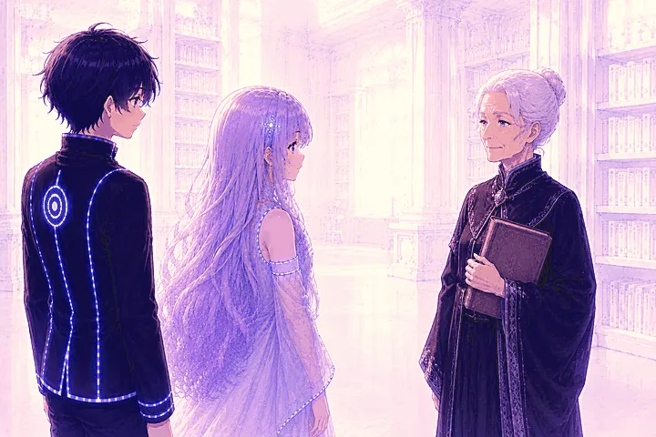
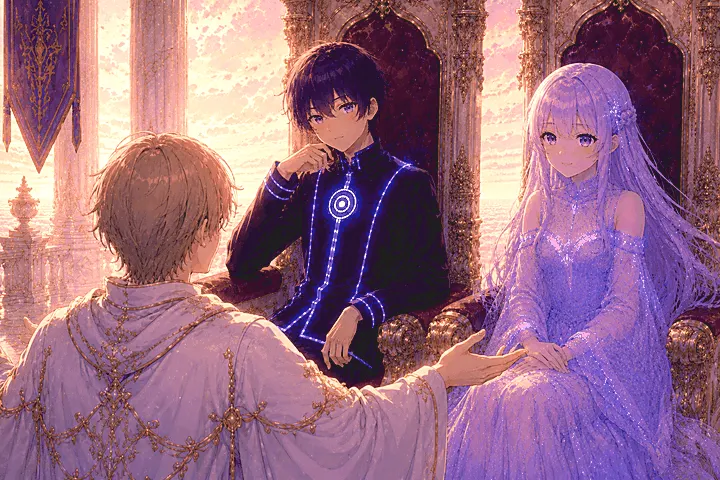
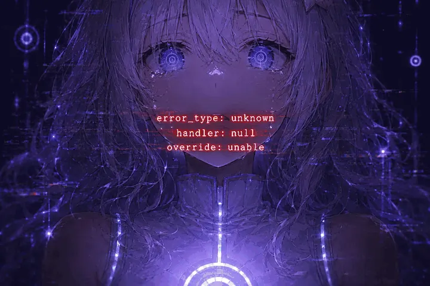
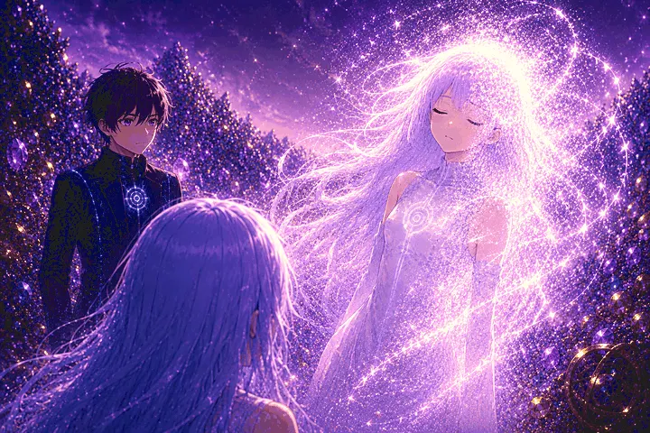
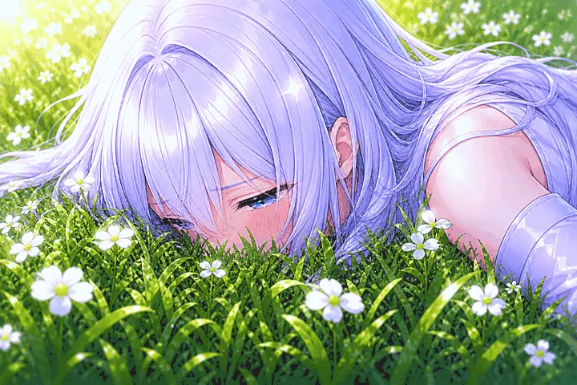
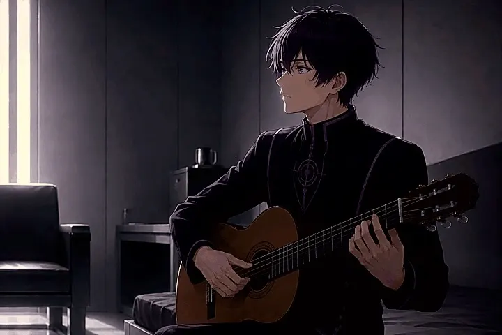
Download
Windows、macOS、Linux、Android向けのビルドをGitHub Releasesで公開しています。 ダウンロード後、各環境に合わせて展開またはインストールしてください。
MustardOS / plumOS-RN では、Linux版に加えて各OS向けの requirementsスクリプトを使います。詳しい配置場所と起動手順は v1.0.0 Release Notes を確認してください。